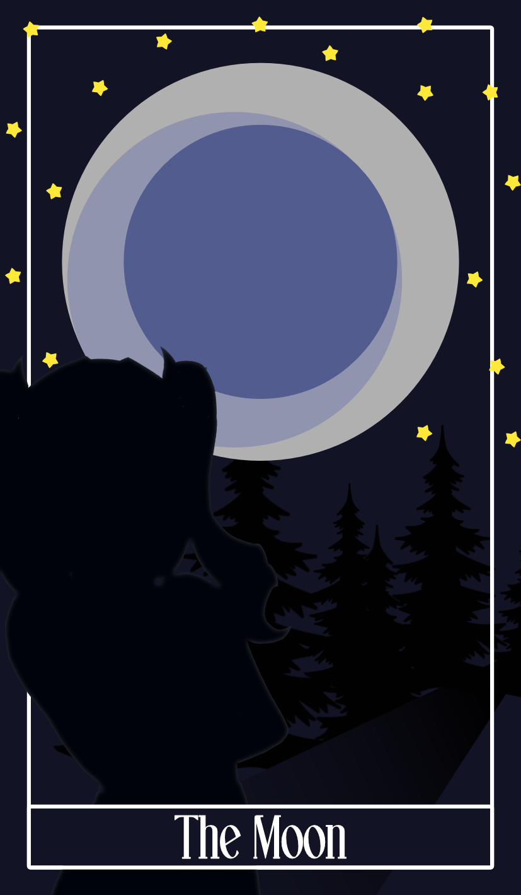

THE MOON
The Girl Who Returned To The Moon
The eclipse shatters as Bathala reaches Mayari, and instead of fading, the silver cracks across her body begin to dissolve like mist under dawn light; she falls into his arms, breathing again as the world slowly restores the moon above them, no longer broken or dying, while Mayari looks up in quiet disbelief and whispers that she can finally feel “real” for the first time, as if the moon has stopped calling her back.
